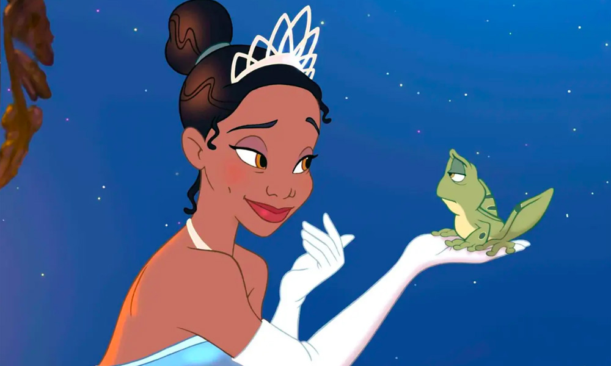
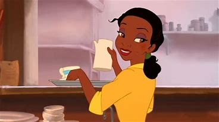
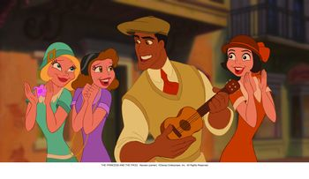

The Princess and the Frog


Realease Date: November 25,2009
Voice Actors!
- Anika Noni Rose (Tiana)
- Bruno Campos (Prince Naveen)
- Keith David (Dr. Facilier)
- Jenifer Lewis (Mama Odie)
- Jenifer Cody (Charlotte)
- Oprah Winfrey (Eudora/ Tiana's Mom)
- Kevin Michael Richardson (Ian the Gator)
- Randy Newman (Cousin Randy)
- John Goodman (Eli/ Charlotte's Dad)

Plot!
The plot of this movie is basically about Tiana, a hard working, young girl from New Orleans, ready to save up and open her own resturant.
This dream takes a turn when she meets Prince Naveen. From messing with evil Dr.Facilier, he gets turned into a frog and mistakes Tiana for a princess
to break the spell upon their meeting, unfortunately turning herself into a frog herself. Together they go on an adventure through
New Orleans, seeking to find the voodoo priestess, Mama Odie, to break the spell.
Soundtrack:
- Never Knew I Needed- Ne-Yo
- Down in New Orleans-Dr.John
- Almost There-Anika Noni Rose
- Friends on the Other Side
- When We're Human
- Gonna Take You There
- Ma Belle Evangeline
- Creuse Encore et Encore
- Fairy Tale/ Going Home
- I Know This Story
- Tiana's Bad Dream